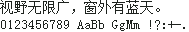

字样资料 / 方正像素
方正像素 14×14
样文完整 · 14×14 · 简体
放大观察 · 3×

原尺寸 · 1×
来源与字样信息
- 家族
- 方正像素
- 字符框
- 14×14 px
- 字符范围
- 简体
- 样本文字
- 视野无限广，窗外有蓝天。
- 拉丁样文
- 0123456789 AaBb GgMm !?:+-.
- 覆盖说明
- 样文完整
- 缺字
- 本次样本文字未发现缺字；不代表完整字库覆盖
- 风格
- 未分类
- 用途
- 像素字体
- 字形来源
- 方正官网说明六种规格均为手工设置像素。样例只读取官方网页逐字公开 WOFF 预览；检查每个轮廓均为原生网格上90%填充率的小方块，直接逐格恢复为1-bit，不将普通矢量字体任意取模。原生14×14单元，未缩放或描粗。
- 授权状态
- 已有许可线索
- 许可说明
- 方正商业字体，商用和嵌入须按官方范围另行授权。本资料只作官方公开预览的渲染对照，不再分发字体或字形数据。
- 说明
- 统一新样文；拉丁字宽按源字体保留，可能为全角、半角或原生不等宽。样文覆盖不代表完整字库覆盖。 已核验当前样文的 10 个汉字与 2 个中文标点的 14×14 像素一致；不代表完整字库相同或授权相同。
- 获取方式
在方正像素家族页面选择 14px 款，通过“获得字体 / 获取授权”获取。
- 来源
- 来源项目 / 资料页
- 原生证据
说明：Official public per-character preview, verified 0.9-cell square contours reconstructed to native pixel centers
查看原生设计来源
相关来源与合并说明
SimSun 中易宋体原生点阵 14×14
5.03
已核验当前样文的 10 个汉字与 2 个中文标点的 14×14 像素一致；不代表完整字库相同或授权相同。
该字号原生点阵不含可打印 ASCII；文件轮廓层有数字与拉丁字符。本预览全部使用方正自身字形，不借字混排。
SimSun Version 5.03；直接解析 EBDT/EBLC 第 2 个 1-bit 原生点阵 strike，ppem=14×14。按用户要求选择字体支持的简体或繁体样句，以实际 Unicode 字符查询，不把简体码位伪装成繁体字形。只调整空白画布以容纳原始 bearing，glyph_x_offsets 与 glyph_widths 保留真实 overhang 和 advance；未栅格化轮廓或借字。
专有系统字体。字体内许可仅允许按所属产品许可显示/打印及受限嵌入；公开 GitHub 镜像不代表开放授权。仅研究对比，不分发字库或字模文件。
查看相关来源仅展示固定字样，不提供字体文件。预览不授予字体使用许可；样文覆盖不等于完整字库覆盖，实际使用前请核实来源项目的适用授权。